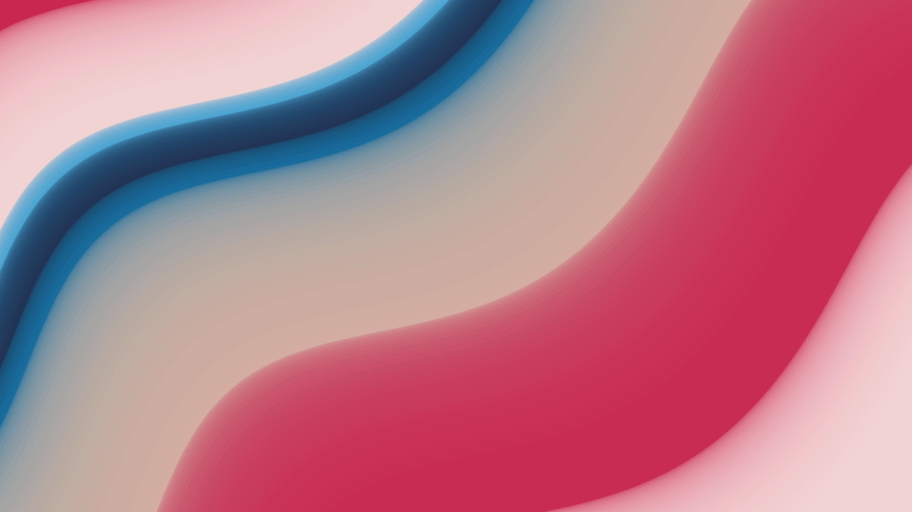

Pssst
your bot wants something
A tiny bot pops out next to your notch when one of your Grok Bot agents is waiting for you. Everyone else stays asleep.
Buy for $7or spend ~16% of weekly Super plan usage and an afternoon building it yourself
For macOS 14 or later. Unofficial companion app, works with the Grok Bot desktop app.

Finder
Wed 16:06
z
zzzzzzz
z
z
z
z
z
z
z
z
Hover the notch, it's interactive.
z
Asleep until it matters
Bots sleep with closed eyes. When one asks you something or sends a new message, it wakes up with a blue dot and jumps to the front.
One click to chat
Hover the notch to see every bot in one row. Click a bot and its chat opens in Grok Bot. It goes back to sleep. Rest the cursor on a waiting bot for 3 seconds and it is marked as read, no chat opened.
Peek before you switch
Hover a bot to read the first two lines of its last message. Tell right away if it matters, without opening Grok Bot.
Works without a notch
On an external monitor it draws its own notch, only while someone is waiting. When everyone sleeps, nothing is on screen. Rest the cursor at the top center for a moment and the notch slides down with all your bots, then hides again.
Snooze or mute a bot
Right click a bot: remind me in 30 min, 1 hour or 3 hours. It sleeps and wakes up by itself if it still wants you. Or never wake me for this bot: it stays in the row, asleep, with a small mute icon.
One shortcut, from anywhere
Option Command G opens the chat of the bot that is waiting and marks it read. Nobody waiting? It shows all your bots. Record your own shortcut in Setup.
While you were away
Lock your Mac or step away for more than 10 minutes. When you are back, the notch shows for a few seconds which bots spoke, like 3 bots while you were away. Never the messages themselves.
Stay in flow. Get pinged only when needed.
Native, lightweight, flat. No dock icon.
Buy for $7